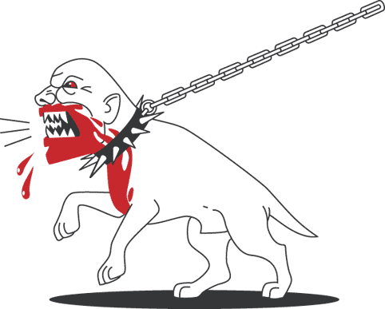
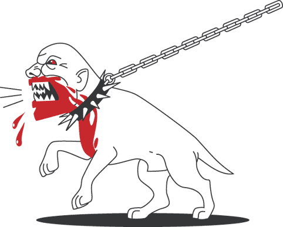
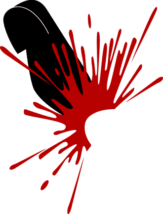
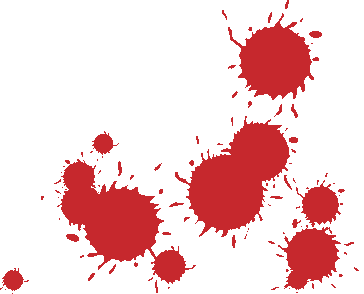

часть 2. Англия
Вали фашню: антифашистские воспоминания 1984-93 гг.
I. Введение
Записывая эти строки, я остро осознаю, сколь скромен мой личный вклад в историю антифашизма. Я уверен, что забыл кучу инцидентов, хотя даже в таком случае многие могли бы написать куда больше меня. Но и такая маленькая хроника не будет лишней, ибо пока никто из наших эти события не описал, и сия история может быть или забыта, или искажена ультраправыми и либералами.
Нападая на фашистов первыми, вполне возможно члены Anti-Fascist Action (AFA) предотвратили множество расистских нападений и убийств. Ведь если бы у фашистов была возможность безопасно для себя устраивать митинги, продавать газеты и выглядеть солидной политической силой, у них были бы все шансы для дальнейшего роста. Фашистская цель номер один на начальном этапе развития их движения – это выглядеть респектабельной и рациональной силой, но, цитируя Мэтти Блэг, «фашизм не начинается с газовых камер, он ими заканчивается».
Иногда антифашистов обвиняют в том, что они занимаются проблемой, их непосредственно не касающейся. В местах вроде Брик Лэйн часто это является правдой. В идеале, конечно, с фашизмом должны бороться в основном местные жители определенных районов, но на практике это приходится делать нам. Ситуация также усугубляется тем, что были неоднократные случаи, когда псевдолевацкие группы демагогией получали места в муниципалитетах разных бедных районов, а потом на практике своей деятельностью только ухудшали положение там и, в конце концов, бросали эти районы.
Я не жестокий человек. Я не в восторге от идеи типа подойти к прохожему и дать ему по лицу, даже если он фашист. То, что я делал – это просто то, что надо было делать. Я бывал во многих острых ситуациях, давших мне понять, что я не смелее, чем кто-либо другой.
С другой стороны, нет у меня и ораторского дара, как у некоторых антифа. А я бы хотел его иметь, потому как в некоторых случаях – это более эффективное средство борьбы с фашизмом, чем качественный хук слева. Я уважаю людей, в одиночку вступавших в споры с фашней в местах вроде футбольных трибун или на их Хай Стрит. Это словесное гнобление, часто сопровождающееся вниманием со стороны прохожих, настолько же эффективно, как и хороший удар по яйцам.
Антифашизм подразумевает риск. Риск быть покалеченным фашистами и риск ареста. Большинство из нас арестовывали по крайней мере по разу. А уголовные дела отнимают много времени, денег и порождают стрессы. Попадание в тюрьму может поломать всю твою жизнь, если у тебя есть хорошая работа, дом и другие важные для тебя вещи. Только некоторым антифашистам удавалось выйти из тюрьмы несломленными. Трое членов Red Action получили суммарно 11 лет тюрьмы за то, что выбросили из окна автобуса отъявленного фашиста Ники Крэйна. Другие антифа, атаковавшие в Йоркшире марш Национального Фронта (причем наци было больше, и во время атаки они находились на возвышенности), получили по несколько лет тюрьмы каждый. Некоторые другие товарищи отсидели меньшие сроки.
Самое главное в антифашизме – это заявить о себе. Конечно, всегда можно придумать тысячи разных отмазок, так что, на мой взгляд, самый важный момент в развитии антифашиста – это момент отрыва задницы от дивана с телевизором. Также важно количество. Почти в любой уличной драке двое завалят одного. Даже если против двух некрупных антифа будет один массивный наци, двое вполне могут победить, одновременно атаковав с двух сторон. А ещё лучше – если у них в руках будет что-нибудь тяжелое!
Несмотря на написанное выше об отрыве задницы от дивана, в 1990-х я сам изобретал массу причин, чтобы пропустить кучу сборов. Честно говоря, я не могу себе позволить быть арестованным снова. Меня ловили и штрафовали в 1985 и 1986 годах. В 1989 меня приговорили к 150 часам «общественных работ». И судья четко дал мне понять, что в следующий раз, когда меня поймают – я отправлюсь в тюрьму. А у меня двое маленьких детей и работающая жена. Если меня посадят, ей придется бросить работу, за которую хорошо платят, и которая ей нравится. Это классический пример для пословицы – «Не можешь сесть, не совершай преступлений!» Угроза тюрьмы более или менее сдерживает меня от участия в силовых антифа-акциях. Ситуация эта очень забавна в том смысле, что во Вторую Мировую люди получали медали за борьбу с фашней... Правда, в 1990-х годах активность наци явно спала (возможно, временно) и во многом из-за отпора, который они получили в 1980-х!
2. Мы…
По-честному, большая заслуга в развитии боевого антифашизма в 80-е и 90-е принадлежит Red Action. По их инициативе Anti-Fascist Action (AFA) была сформирована в 1985 году, соединив людей из «Direct Action Movement» (DAM), «Red Action», «Workers Power» и многих других групп и отдельных людей. «Red Action» внушали ужас британской фашне за много лет до того, как я начал, и много лет после того, как я перестал быть активным. Я не могу сказать, что полностью разделяю идеи «Red Action», но я не могу не уважать их за смелость и последовательность в антифа-борьбе.
У «Red Action» были люди в Северном Лондоне, Манчестере и Глазго, и они были хорошо организованы в межгородском взаимодействии. С другой стороны, антифа в Ливерпуле, городах Йоркшира, Бристоле, Норвиче и некоторых других местах составляли в основном местные анархисты. Также анархисты, в основном DAM, были первыми, кто поставил под сомнение тактику антифашистского журнала «Searchlight» (ориентация на сотрудничество с полицией).
Я участвовал в DAM, анархистской организации, в которой состояло некоторое количество замечательных антифашистов. У DAM были успехи не только на антифа-фронте, но и в акциях поддержки бастующих шахтеров, печатников и т.п. Я могу долго и вдохновенно рассказывать о прекрасных комрадах, с которыми я был в DAM, но зачем давать инфу MI5? Кому надо, тот и так знает. Хотя на сборах AFA, когда DAM выставляло 5-20 бойцов, «Red Action» обычно приводило в три раза больше. Так что мы были как бы «младшими братьями».
Но я уверен, что участие DAM в AFA было очень важным. На то есть две причины. Во-первых, различные левацкие и альтернативные группы приходили и уходили из AFA, и только DAM стабильно во всём участвовало. Так что благодаря DAM AFA не превратилась в просто один из проектов Red Action. Во-вторых, силовая политика DAM спасла анархистское движение от мягкотелости и попустительства к фашизму. Ведь многие десятилетия до появления DAM английские анархисты были пацифистами, хиппи и бородатыми «профессорами».
Однажды, на одном из самых представительных сборов AFA (по-моему, это был Карнавал Единства 1991 года) решили посчитать, сколько народу и откуда он. 120 человек было из Red Action, 60 – из DAM, 20 – из «Workers Power», 8 – из «Class War» и несколько человек не принадлежали к каким-то конкретным группам.
Без сомнения, в AFA входили лучшие антифашисты нашего поколения. AFA того же калибра, что и антифашисты времен Гражданской Войны в Испании, «Группа 43», ветераны Cable Street, французские и итальянские антинацистские партизаны. Я горжусь тем, что был знаком и действовал вместе с самыми искренними и смелыми людьми Британии.
Почти все, кто участвует в физической конфронтации с фашней, – анархисты или социалисты. Мы – революционеры, находящиеся в оппозиции к капитализму. Наша долгосрочная цель – противостоять правительству и буржуям ради построения свободного и справедливого общества. Между тем, дать под зад кучке вонючих фашиков – это неплохая практика. И если мы этого не можем сделать, как тогда вообще говорить о борьбе с капитализмом?
Также стоит отметить, что часто крепкие нервы бывают важнее больших мускулов. Наглость некоторых стычек до сих пор заставляет меня с улыбкой вспоминать о них. Например, однажды люди из «Red Action» привалили членов «National Front» в центре Лондона и проследили, как их увезли в госпиталь Святого Томаса. Затем они в тот же вечер привалили их повторно, на выходе из этого госпиталя!
Некоторые аспекты антифашизма действительно угарны, но антифашизм также приносит удовлетворение тем, что это – реальное дело, а не споры о политической теории и утопии. Другая позитивная сторона антифашизма – формирование крепких дружеских связей между людьми, вместе пережившими опасности.
3. Они…

Фашизм – это идеология среднего класса, основанная на национализме, капитализме, подчинении и снобизме. У британской фашни это выражается в ненависти к разным меньшинствам. Они не понимают истинного смысла выражения «козел отпущения». Они любят рассказывать басни о своей якобы христианской вере и, соответственно, ненавидят евреев, игнорируя тот факт, что Иисус и все апостолы были евреями. Они обычно ненавидят иммигрантов, игнорируя то, что предки британцев также были своего рода иммигрантами. Они ненавидят рабочее движение, игнорируя то, что жизнь без него была бы «гадкой, невыносимой и короткой». Они обычно ненавидят гомосексуалистов, хотя порядка 10% фашей – сами гомосексуалисты. Они обычно ненавидят ирландских католиков, игнорируя то, что большинство европейских фашистов симпатизируют ирландским католикам как «националистическим борцам за свободу». Они требуют депортаций африканцев и индийцев, игнорируя тот факт, что если бы в Англию вернулись все ранее уехавшие в Африку и Азию (а также Америку и Австралию), то на этом островке пришлось бы как-то размещать миллионов 100. В последнее время они также начали ненавидеть нищих, игнорируя то, что праворадикальная политика как раз таки и порождает социальные катаклизмы.
Честно говоря, я не думаю, что с фашистами можно спорить. Мы верим в равенство, а они – в неравенство. Может, это дается с молоком матери. Это сущность личности, которую, как известно, мало какими аргументами можно изменить. Наша работа – держать фашистов дезорганизованными и обороняющимися, не надеясь «переделать» их. Но, всё же, несколько бывших членов «National Front» перешли на нашу сторону и, возможно, именно разочаровавшийся в своем прошлом бывший фашист – это самый эффективный тип антифашиста.
Сами британские фаши – это смесь, состоящая из шизоидов, педофилов, неудачников и самовлюбленных маньяков. Они, цитируя Джереми Харди, – люди, считающие, что «родиться белым – это своего рода подвиг». Они всё время стремятся объединить свои силы, что всегда оканчивается расколами, так как всегда оказывается «слишком много вождей и недостаточно индейцев». Фаши утверждают, что они «за закон и порядок», но, видимо, это не совсем так, ибо по половине из них явно тюрьма плачет.
Надо отметить, что фашисты не отличаются смелостью. Конечно, они хотят «выглядеть крутыми», ради чего стараются копировать внешний вид скинхедов – бритая голова, бомбер, мартенсы… Но в реальности они далеко не круты. Конечно, толпой они могут опинать беззащитную жертву, но если они предполагают отпор – они не так смелы. Например, однажды в Гайд-Парке 3 автобуса примерно со 100-150 фашиками подъехали к 20-м участникам AFA. Последние не побежали, а решили стоять. Чем ближе фаши подходили, тем больше их отставало, первый ряд потихоньку переходил с бега на шаг, а потом они встали на почтительном расстоянии и орали всякий бред до приезда полиции.
Но, так или иначе, фашистские организации всё ещё являются привлекательными для некоторого количества парней, большинство из которых надеются там найти «чувство плеча». Фашистские организации очень выгодны капиталистической Системе, ибо являются хорошим инструментом воплощения в жизнь её принципа «разделяй и властвуй». По всему миру они «неофициально» используются правительством и капиталистами для атак на активистов рабочего движения и гражданских инициатив. Примеров масса – Северная Ирландия, Турция, Гватемала и даже Тоттенхэм 1995 года (т.н. «Забастовка ради пищи»). Несмотря на малочисленность фашистских партий, им удается влиять на политику «мэйнстримовых» партий по всей Европе. Они берут заметную часть их лозунгов, чтобы придать себе пафоса и заинтересовать редакторов таблоидов. Например, в 1979 году Тэтчер пришла к власти, лишь позаимствовав половину идей у «National Front».
Будучи восприимчивым к новым идеям тинэйджером, я купил экземпляр «Новостей Национального Фронта» у улыбчивого бонхеда рядом со станцией «Боро Тьюб». Мне было интересно их читать, а их позиция против размещения в Англии американского ядерного оружия совпадала с моей. Чувство принадлежности к чему-то немного опасному и противоречивому может быть очень привлекательным. Тут видна возможность деятельности, а многим нравится бороться за что-либо – ведь это вариант наполнения смыслом своей жизни. Так что легко понять, почему ультраправые могут быть привлекательны для бунтующей молодежи.
Другая привлекательная сторона фашизма – это иллюзорная возможность для среднестатистического белого неудачника «стать могущественным». На практике максимум этого сомнительного «могущества» – возможность поучаствовать в легальном марше ультраправых через мультинациональный квартал или же – в нападении толпой на одинокого и беззащитного «цветного». Они даже гордятся этими трусливыми атаками и называют их «патрулями». И не важно, что в таком «патруле» было десять обосравшихся лоботрясов, в результате избивших двух школьников или пенсионеров. Если их действия остаются безнаказанными – их распирает «гордость» и они считают, что тогда они «владеют» своей улицей. Ну вроде как поместьем... И, следовательно, они дальше будут продолжать свою ублюдочную деятельность.
Цель AFA – не допускать подобных действий. Как только мы получаем информацию о нацистском сборе для митинга, марша или ещё для чего-нибудь – мы также мобилизуемся, причем нередко очень оперативно, чтобы попытаться отколотить их. Мы хотим, чтобы они не чувствовали себя в безопасности на улице. Иногда мы используем арматуру, камни и палки, но чаще – просто кулаки и ботинки. Чаще всего для фашиков это заканчивается синяками и ссадинами, но, что гораздо важнее – разрушает их необоснованную уверенность в собственной псевдокрутости.
Фашисты абсолютно не боятся псевдосоциалистических партий среднего класса. Таких, как SWP, RCP, WRP и лейбористов. Я могу привести сотни примеров их трусости и ханжества. Забавно, что нацисты и настоящие антифа (т.е. мы) одинаково презираем этих псевдолевых.
4. Maidstone, 1984
Первая антифашистская демонстрация, в которой я участвовал, состоялась в Кенте в 1984-м году. На собрании Группы Лондонских Рабочих (сборная солянка из анархистов, коммунистов и т.п.) я услышал, что «National Front» собирается на следующие выходные устроить марш в Maidstone, и что будет контрдемонстрация. Я был абсолютно не в курсе, что там планируется и вообще не знал никого, кто бы туда собирался.
Так что я просто добрался туда на электричке и лазил по этому городишке, пытаясь понять, что к чему. Из настенной листовки я узнал, что будет демонстрация «протеста» против «National Front» во главе с Лейбористской Партий. Я решил пойти туда, ибо ничего лучше не мог придумать. Я был горько разочарован, поняв, что демонстранты совсем не собираются останавливать марш «National Front», а умышленно идут по другой части города, собираясь закончить всё митингом перед рынком мясной продукции в пригороде. На митинге куча скучных «ораторов» рассказывала собравшимся «об ужасах фашизма» и прочем бла-бла-бла, а потом попросили всех расходиться по домам. Но порядка сотни людей остались сидеть на траве. Я подошел к ним и предложил пойти в город поискать фашню. Полдюжины людей согласились со мной, и мы опять пошли в центр города. Дорога, надо сказать, была нервозной.
Мы шлялись по центру Мэидстауна, а затем случилось чудо: за какими-то магазинами мы обнаружили 20 парней и умудрились определить, что они тоже антифашисты. Мы бурно приветствовали друг друга. Это напомнило мне фотографии, где в конце Второй Мировой войны советские войска встречают американские! Я не знаю, что это была за группа, скорее всего «Red Action». В любом случае, у них была информация, где будут нацисты, а наше объединение подняло боевой дух. И вот мы двинулись, горя душевным огнем, срывать марш «National Front».
И вот нацисты уже в 100 метрах от нас. Я думаю, их было человек 200, со своими плакатами, флагами «union jack» и т.п. Я был очень удивлен, увидев панка в их первом ряду. Я-то думал, что панки всегда антиавторитарны и выступают против фашизма. Марш охранялся кучей пеших полицейских, а также впереди марша ехал полицейский автобус. Мы решили встать на пути марша. Когда между нами оставалось метров 30, полицейский автобус прибавил скорость и помчался прямиком на нас. Мы вынуждены был отскочить, иначе кого-нибудь точно задавило бы. Вот так вот полиция помогала фашистам маршировать через мирный английский городок.
Далее полиция охраняла активистов «National Front» во время их выступлений с помоста в местном парке. В парке были очень разные люди – кто-то насмехался и улюлюкал, а кто-то подходил послушать. Потом полицейские подбросили фашистов до железнодорожной станции – нормальный сервис!
5. Оксфордская улица, Лондон, 1984 год
Это был мой первый совместный сбор с «Red Action». Мы (DAM) решили объединиться с ними, чтобы вместе помешать маршу «National Front», который должен был пройти через лондонский Вест Энд. Членов НФ охраняла полиция, так что мы на них не прыгнули сразу, а поначалу показывали им средние пальцы и выкрикивали оскорбления в адрес Яна Андерсона, Джо Пиарса и других их деятелей. Потом мы пошли в паб, где скауты сообщили нам, что несколько ведущих людей из НФ идут по Оксфордской улице. Два комрада и я вышли и нашли их. Это был классический кулачный уличный бой, похожий на те, которые изображали на старых картинах о боксе. В результате парни из НФ побежали, и им даже удалось запрыгнуть в проезжавшее такси, в то время как мы ещё били их и пытались вытащить из такси. Водитель умчал их прочь, оставив нас в прекрасном расположении духа, а один наш товарищ держал в руке воротник от куртки одного из фашистов. (В следующем номере газеты «Red Action» была заметка о том, что этому фашисту (Стиву Эдвардсу?) придется сходить к портному.)
И вот мы спокойно идем по тротуару к нашему пабу, как вдруг в десяти ярдах впереди нас появляется полицейская машина, из которой вылезают восемь копов. «Вот дерьмо!»- подумал я. Похоже, кто-то позвонил в полицию. Одним из самых счастливых моментов в моей жизни стало то, что полицейские спокойно прошли мимо нас, не поняв, что именно мы им были нужны.

6. Бьюри Санкт-Эдмондс, 1986 год
Эта история оказалась для меня холодным душем – потому как я убежал в момент опасности. Я глубоко стыжусь этого, но надо понимать, что все мы делаем ошибки, и на ошибках надо учиться, если не хочешь, чтобы они повторялись.
НФ в тот день маршировали через этот городок, избрав поводом протест против иммиграции и местной американской базы ядерного оружия. Возможно, они хотели иметь больше английских атомных бомб вместо американских. Забавно, что все английские леваки и анархисты были тоже против американских ядерных баз, но совсем по другим причинам!
Три мини-автобуса с антифашистами из Лондона, плюс люди из других городов и местные активисты собрались, чтобы дать отпор НФ.
Веселье началось с того, что часть нашей банды вычислила нескольких фашистов на городском вокзале. Они были избиты, а один наш товарищ из Ливерпуля успел подрезать очки Дерека Холланда, тогда большой «шишки» в НФ, пока тот не грохнулся оземь. Потом мы долго глумились над привычками скузеров [скузеры – слэнговое название жителей Ливерпуля, в Англии имеют гопнический имидж].
Пока мы шли к центру городка, подъехали грузовики с полицейскими и перегородили нам путь. Копы начали обыскивать каждого. Многие наши имели при себе отвертки, ножи и т.п. Было очень смешно наблюдать, как копы с сильным саффолкским акцентом спрашивают: «А почему у тебя в кармане (например) плоскогубцы?» – Ответом всегда служило: «Я использую их на работе». А полицейский отвечал – «Хорошо, можешь идти». Так что никто не был арестован за «ношение оружия, предназначенного для нападения», несмотря на то, что был викенд и все мы жили миль за сто оттуда!
Потом начался марш НФ. Мой комрад из DAM, смельчак или безумец, пошел в одиночку оскорблять их. Я отправился за ним на случай, если ему нужна будет помощь, хотя в душе я надеялся, что он всё-таки вернется к основной группе антифашистов. Марш двигался мимо нас, и парень методично считал марширующих. Когда он закончил, он начал орать им: «Шестьдесят пять! Ха-ха!» «Вы смогли собрать только шестьдесят пять человек? Трогательно». «И с шестьюдесятью пятью людьми вы мните себя представителями Англии? Лохи!» Я стоял за ним и мечтал, чтобы он заткнулся, ибо я был убежден, что настал наш последний час. Но мой товарищ был действительно смелым человеком с замечательной тактикой, ибо он удивил и пристыдил фашистов, неожиданно понявших, что их всего лишь шестьдесят пять. (Когда я говорю «…был смелым человеком…», главное слово тут «был». Несколькими годами позже из-за героина он потерял свой прекрасный ум и тело, сильное как у быка.)
Позже, когда марш прошелся через городок, основная антифа-группа начала атаку. В конце их маршрута была стройка, куда забрались полдюжины наших и обрушили оттуда град кирпичей, некоторые задели и полицейских. Фашисты начали подбирать брошенные в них кирпичи и швырять обратно в нас. Так что скоро небо закрыла волна кирпичей и стройматериалов, летящих в разные стороны. Это был ад кромешный. И в этот момент антифа атаковали марш сзади и захватили один из их флагов. Избиение продолжалось, но тут полицейские начали оправляться от шока и разозлились так, что антифа отошли в центр городка, чтобы перегруппироваться.
Мы зависали в центре до середины дня. Десять наших ели в кафе рыбу с картошкой, когда поняли, что появилась жаждущая мести группа фашистов. Один из наших начал собирать разные железяки, валяющиеся неподалеку в связи с ведущимся там дорожным строительством.
Стыдно признаться, но я и ещё несколько человек просто убежали, вместо того, чтобы встать на бой. Драка началась за пределами кафе и завершилась победой антифашистов. Тем временем я и один парень из «Red Action» нашли нациста на рынке. Я подобрал на помойке какую-то палку и замахнулся ей на нациста. В то же время мой напарник выхватил у стоявшего рядом торговца лестницу-стремянку и пару раз постарался достать ей фашика, а потом кинул ее в него. Это была ошибка, так как нацист подхватил лестницу и погнался за нами. Опять пришлось убегать. Я так быстро бежал, что растянул мускулы на обеих ногах. Я был расстроен из-за своей трусости весь оставшийся вечер, а также всю дорогу домой.
Единственный веселый момент был, когда мы выезжали из городка по направлению к Лондону. Первый мини-автобус обогнал наци-скинхеда (я уверен, это был Ники Крэйн), который шел по тротуару с парой своих собратьев по разуму. Он понял, что в автобусе антифашисты, и начал выкрикивать ругательства и показывать знаки типа «V», находясь в счастливом неведении о том, что сзади к нему приближается ещё один мини-автобус. Из этого транспортного средства высунулся человек, вооруженный железной палкой, обернутой в маскировочную ленту, чтобы она выглядела как деревянная. Придурок всё ещё показывал «V» первому мини-автобусу, когда палка красивейше вписалась ему в затылок, прямо как в мультиках о Томе и Джерри. Его ноги разъехались как у тряпичной куклы. Мы с удовольствием созерцали этот прекрасный эпизод из третьего мини-автобуса.
7. Стэрфорд, Лондон, 1987 (?)
Однажды едучи по Стэрфорду на велосипеде я пропалил мужчину, примерно 50 лет, наклеивающего стикер на фонарный столб. Я подъехал к этому столбу и понял, что это стикер «National Front». В этот момент мужчина вошел в маленькое итальянское кафе на другой стороне дороги. Я последовал за ним. Он стоял перед кассой, ожидая заказ. Я увидел на лацкане его пиджака значок «Англия для англичан». Я схватил его за этот значок и заорал: «Ты, ебаный фашист…» ну и т.п. Мужик сильнейше испугался: его чай и яблочный пирог полетели на пол, а сам он съежился, как побитая собачонка. Конечно, владелец итальянского кафе понимал, что фашизм – это плохо, но ему не хотелось насилия в его заведении, так что вскоре мне пришлось уйти.
8. Брик Лэйн, Лондон
Это место долго напрягало лондонских антифашистов. На углу Брик Лэйн и Бентал Грин Роад фашисты продавали свои газеты ещё со времен Мосли (1930-е годы). Несмотря на то, что это место находится посреди бангладешского квартала Ист Энда и напротив еврейских пекарен, фашисты выбрали его для ежевоскресного общения и агитации. Пользуясь благосклонностью местной полиции, они также заседали в местных пабах: «The Blade Bone», «The Sun» и «The Weavers Arms».
AFA и DAM приложили массу усилий, чтобы их оттуда выставить. Иногда это выражалось просто в нападениях на отставших от основной массы одиноких фашиков, а иногда, собрав человек 50, мы захватывали перекресток и обороняли его ото всех, кто пытался туда пройти. Помню одну такую схватку – происходила она прямо через Бентал Грин Роад. Через несколько минут после её начала появилась полиция, арестовав с нашей стороны куда больше людей, чем с их (ничего удивительного).
В другой раз мы, 6 человек из DAM, набрали «подручных средств» и отправились туда продавать нашу газету «Прямое Действие», чтобы спровоцировать стычку. Мы простояли минут десять, потом к нам неспешно подошел один из них – Мартин Кросс – и поинтересовался, сколько стоит газета. Мой товарищ сказал: «50 пенсов» (реальная цена). Я же (будучи агрессивно настроен) прибавил: «А для фашни – фунт». Он посмотрел на меня, а потом внезапно, будто вспышка, меня оглушил удар. Я так удивился, что застыл на несколько секунд. Мартин Кросс повернулся и пошел прочь. Наверное, он потом долго смеялся над этим случаем. А вот я нет – мне было стыдно за мою столь медленную реакцию. Век живи – век учись.
В другой раз я и пара наших одним воскресным утром лазили там в поисках фашистов, и уже ни с чем собиралась идти домой… Как вдруг появился… кто бы вы думали? Ян Андерсон, лидер «National Front»! Правда, в то же время рядом ехал полицейский мини-автобус, так что мы перешепнулись и решили сразу ничего не предпринимать. Когда полицейская машина проехала, мы уже были так близко от Андерсона, что я не мог удержаться от того, чтобы не врезать ему с ноги. Я со всей силы влепил ему по яйцам, также мой товарищ начал его окучивать, и он быстро свалился. Мы побежали в соседние дворы, а полицейская машина в это же время пыталась развернуться.
В 1970-е годы, когда националистическая скинхед-сцена была развита, Восточный Лондон страдал от всех видов расистских мерзостей, нападений и даже убийств (случай Альтаба Али). Фашистские наклейки и граффити были повсюду, включая лозунги, которыми было расписано полицейское отделение на Бентал Грин, и которые полицейские не стирали. По вопросу о расовом насилии была встреча между представителями местного общества и полицейским начальником John Wallis of the Met. Он сказал, что единственная возможность прекратить продажу газет «National Front» на Брик Лэйн, это «появляться там раньше «National Front»». Группа местной бенгальской и другой молодежи решила так и сделать и была арестована «за попытку организации беспорядков», см. книгу Кеннета Лича «Брик Лэйн 1978».
Забавно, но окончательно фашисты были выбиты с Брик Лэйн только, когда в местный муниципалитет был избран Дерек Бикон, кандидат от Британской Национальной Партии. Выборы были в четверг, а в воскресенье фашисты решили праздновать там свою победу, но вместо праздника они попали просто под нереальную раздачу. Меня там не было, но мой товарищ рассказывал, что антифа удалось очень близко подойти к врагу, не вызвав подозрений, так как они пели при этом «Правь, Британия!»… А потом полиция, как всегда, решила не мелочиться и потратила немало денег налогоплательщиков, отслеживая передвижения некоторых антифашистов с вертолетов. Мы подходили потом туда несколько раз, ожидая мести со стороны фашни, но противник уже опасался там появляться.
9. Трафальгарская площадь, Лондон
Большую часть 1980-х группа, выступавшая против режима апартеида, проводила круглосуточный ежедневный пикет рядом с посольством Южно-Африканской Республики на Трафальгарской площади. Поводом к тому было заключение Нельсона Манделы, но, по сути, это был протест против всех аспектов расистской политики южно-африканского правительства. Следовательно, фашистские банды любили атаковать беззащитные группы протестующих, особенно после маршей. Потому и активисты AFA часто появлялись на Трафальгарской площади в поисках врага.
Отдельной темой был ноябрь месяц, ибо в это время Национальный Фронт каждый год организовывал там же на Воскресенье Воспоминаний марш к Cenotaph. Я не знаю, как они объясняли этот марш к Британскому Военному Мемориалу в Whitehall, ведь фашисты поддерживали Германию во Второй мировой войне. Естественно, мы высмеивали их такими не самыми политкорректными песнями, как «Две мировых войны и один чемпионат мира» и «Армия отцов». Этот день всегда начинался или заканчивался стычками на Трафальгарской площади или в её окрестностях. Однажды мы собрали 60 человек и заняли место их сбора на площади Бресседен. Около 40 членов «National Front» сначала вышли из-за угла, но потом передумали иметь с нами дело и свалили. В тот день мы одержали победу, пусть моральную, а не физическую.
В другой раз один мой знакомый из DAM потерял основную группу наших и в результате оказался посреди 200 беснующихся фашистов. Пара их начали на него косо поглядывать, так что ему пришлось смущенно скандировать: «Убей ублюдка-коммуниста!», «Права – белым!» и т.п., чтобы шифрануться до того, как он смог бы присоединиться к нам снова.
А в другой раз один несчастный фашист был окружен рядом со станцией Виктории, немного побит, потом прижат к стене. Маркером ему разрисовали лицо и одежду – свастиками, надписями «наци», «фашист» и т.п. После чего отпустили.
В другой год на Трафальгарской площади комрад из DAM побил члена «Red Action», потому как не узнал его, за что потом извинялся. Думаю, американцы называют подобные ситуации «дружественным огнем».
А в другой год мы засекли пару фашистов, когда те проходили через главную часть площади. Я и несколько наших пошли за ними. Я хотел дождаться, когда они выйдут с площади и отфигачить их на какой-нибудь тихой улице вдали от видеокамер и полиции. Но мои разгоряченные друзья прыгнули на них прямо напротив Дома Канады, ну и я к ним присоединился.
После хорошей взбучки мы оставили наци-скинов лежать и решили свалить. Мы сделали круг и присоединились к основной группе антифашистов, стоявшей на ступенях церкви святого Мартина-в-полях. Это было ошибкой – я должен был идти домой, так как полицейский, который видел, как я бью нациста, узнал меня и использовал этот факт против меня. Моё затруднительное положение стало ещё хуже, когда в моей куртке полицейский нашел железную палку, хоть использовать её я и не успел.
В своей машине он изображал, что симпатизирует мне: сказал, что думает, что Нельсона Манделу надо освободить, а Национальный Фронт – это сборище придурков и т.п. Наивный, я поддакивал ему, вместо того, чтобы молчать, так как потом он использовал все мои реплики в суде, чтобы доказать, какой я опасный левак!
Я получил 6 месяцев общественных работ, что, честно говоря, было совсем не здорово. Через несколько месяцев после начала моего наказания в нашу бригаду направили… Мартина Кросса, известного нациста, вокалиста «Screwdriver» и человека, избившего меня на Брик Лэйн за несколько лет до этого (сейчас он отбывает пожизненное заключение за то, что зарезал своего товарища-фашиста во время одной из их, хе-хе, «внутренних дискуссий»). Я сказал своему надсмотрщику, чтобы Мартина Кросса направили куда-нибудь ещё (так как я работал на этом месте ранее), а то у нас будут стычки. В следующее воскресенье его перевели куда-то, что хорошо – такое соседство могло закончиться новым уголовным наказанием.
Из историй об общественных работах (которые в Англии дают за разное хулиганство) мне больше всего нравится одна: человек из «Red Action» рассказывал мне, что в первый день таких работ парень из его бригады взял и… сжег ящик со всеми инструментами. Несколько недель бригада приятно отдыхала.
10. Бервик стрит, Лондон, 1989
Один фашист открыл здесь маленький магазин на Ридинг Хаус стрит, где продавались неонацистские значки, одежда, журналы и т.п. Как-то воскресным утром, во время антифашистской демонстрации рядом с этим магазином, парень из Шотландии и я увидели одного из «клиентов» магазина. Мы дали ему пройти ярдов 100 по Бервик стрит, там и привалили. Этот случай интересен техникой боя, которую применил мой товарищ – это был прыжок, в котором все тело нападающего приземляется на плечи и голову фашиста, что сопровождается серией ударов руками и ногами и приводит противника в «состояние нестояния».
11. «Марбл Арч», Лондон, 1989
В 1989 году «Blood and Honour» готовила большой неонацистский музыкальный фестиваль в Лондоне. Они не публиковали настоящее место концерта, чтобы избежать атак антифашистов и проблем с хозяевами зала (их обычной тактикой было снимать залы под чужими именами). Так что они обнародовали только место сбора для своих сторонников, с которого уже все и должны были бы поехать на концерт. На этот раз это была станция метро «Марбл Арч».
День фестиваля совпадал с 3-м днем конференции DAM в Вилтшире, но всё равно мини-автобус с нашими людьми выехал оттуда в Лондон. Это был один из тех случаев, когда большинство наших были уверены, что едут на верную смерть. «Blood and Honour» могли выставить несколько сотен рыл, а то и всю тысячу. Была бы моя воля, я бы лучше пошел домой попить чаю в тепле и уюте. Но, что хорошо, в AFA рулят более дерзкие люди, чем я! Мы встретились с «Red Action» и некоторыми другими антифашистами и двинулись толпой в 100 человек (уже несколько более уверенные в себе) к «Марбл Арч». И нам дико повезло!
Весь день фашисты прибывали туда – поодиночке, группами и даже автобусами. И каждый раз их размазывали по асфальту. Это было замечательно! Мне больше всего понравился момент, когда трое наших обычно одетых людей и парень, одетый как хиппи, проследовали за одним из нацистов в переулок и заколбасили его до того состояния, что он начал просить о пощаде. Потом выглядящий как хиппи парень сказал мне, что пострижется и будет носить нормальную обувь, а не сандалии, так как ему по-настоящему понравилось участвовать в антифа-акции.
Один человек из DAM был в тот день арестован за то, что бросил урну в окно автобуса с фашистами, но уголовка развалилась по тупости полиции. Пока он сидел в участке, я позвонил его отцу и сказал, что его сына арестовали, за что на меня был вылит ушат помоев: «Да у него всегда неприятности, когда он куда-либо пойдет с тобой!» Такие люди неблагодарные…
Другой арестованный участник DAM одинаково презирал как фашистов, так и британское правосудие, так что в суде он появился в шортах и в толстовке с надписью «Выезд против «Millwall» – добавить, бля, нечего». К счастью, он отделался штрафом, который DAM заплатила.
12. Центр Дэвенент, Лондон, 1990
AFA решило провести публичное мероприятие в Восточном Лондоне, который фашисты считали своей базой, чтобы таким образом «бросить им перчатку». Моя работа заключалась в том, чтобы скаутировать на мотоцикле, выискивая какие-либо признаки присутствия врага. В зале были сконцентрированы 50 ожидавших беспорядков антифа (плюс сами посетители). Во время наблюдения я заметил 5 парней неподалеку от зала, но подумал, что вряд ли это фашисты, так что я не почесался предупредить товарищей… Вскоре небольшая самодельная бомба (скорее всего, сделанная из разной пиротехники) была брошена в заднюю стену здания. К счастью, паники не было, и никто не пострадал. Охранники из AFA безрезультатно преследовали каких-то парней. Сейчас мне кажется, что это были как раз те самые парни и мне жаль, что я не сообщил другим о своих подозрениях.
13. Норвич, 1990 (?)
Это была одна из тех немногочисленных акций, которые были сделаны только силами DAM. Мне кажется, в тот викенд «Red Action» была на своей конференции или чем-нибудь подобном. BNP проводила встречу с избирателями в здании городской начальной школы.
Около 10 человек из DAM выдвинулись из Лондона на мини-автобусе и встретили там несколько местных людей из DAM. Когда мы появились рядом со школой, то увидели малюсенькую псевдолевацкую демонстрацию (SWP и им подобные), суетящуюся за полицейскими заграждениями. Этот цирк дополнялся визгами демонстрантов о том, что «полиция охраняет фашистов» (хотя всё было похоже на то, что, скорее, полиция охраняет это мудачьё от фашистов).
Нам там было нечего делать, и мы решили осмотреть окрестности, где нашли машину Джона Тиндалла, лидера BNP. Колеса ей прокололи сразу. Затем мы отследили момент, когда Тиндалл и его какой-то единомышленник вышли из школы и залезли в машину. Тут появляемся мы с камнями и начинаем бомбардировать машину, пока придурки силятся уехать. Один камень разбил лобовое стекло, другой влетел точно в голову приятеля Джона Тиндалла. 100%! Маленькая машина заскрипела прочь, преследуемая градом камней. Вежливые «леваки» с легальной демонстрации перед воротами школы были ошарашены, увидев Тиндалла, хныкающего в машине, которая выглядела так, будто попала в эпицентр супержесткого футбольного дерби. Картину дополнил приятный штрих из ещё нескольких брошенных бутылок.
14. «Лондон Бридж», 1990
«Лондон Бридж» – это основная железнодорожная станция в направлении на Веллинг, где у British National Party был свой офис и книжный магазин на Аппер Викхэм Лэйн. 50 наших направлялись через эту станцию, чтобы присоединиться к большой левой демонстрации, когда мы засекли Тони Лекомбера, одного из главарей BNP, и его жену, направляющихся в Веллинг. Он несколько раз попадал в уголовные дела из-за насилия и даже за изготовление бомб. Мы настолько не ожидали увидеть его вот так просто фланирующего по направлению к билетным кассам, что поначалу никто из нас даже не двинулся. Тогда я подошел к нему и отправил его на пол серией прекрасных ударов ногами. Затем к его заколбашиванию присоединились несколько наших, пока его кричащая жена не достала газовый баллончик и не опрыскала всех нас. Мне удалось спереть пакет, который нес с собой Тони. Он оказался наполненным футболками BNP. (Лекомбер так много о себе возомнил, что, естественно, попал в поле зрения AFA. Он провел на полу столько времени, что у него появилось новое прозвище – Тони Асфальтовый).
Я поменялся с одним товарищем куртками, т.к. на станции было полно видеокамер. На 20 минут я шифранулся за пределы станции, на случай приезда полиции. Потом я опять присоединился к нашим, что нарушает одно из основных правил антифашиста – сделай одно дело и иди домой. Но в тот раз мне это сошло.
15. Ватерлоо, Лондон, 1992
Это была крупнейшая антифашистская битва со времен Левишэма (1977 год). О ней писали таблоиды, рассказывали радио и телевидение. Её целью было противостояние концерту, который организовывало «Blood and Honour». «Blood and Honour» – это музыкальная фашистская организация, раскручивавшая такие расистские банды как «Screwdriver», «The Macc Lads» и «No Remose» (которая раньше называлась «Dead Paki in the Gutter»). Они могли собрать от 500 до 2000 людей, в основном наци-скинов.
Антифашистам было бы куда легче, если бы фашня существовала только в форме наци-скинов, так как, во-первых, их легче вычислить, чем «казуалов» (обычно одетых), а во-вторых – это всего лишь мода, всегда гарантированно остающаяся немногочисленной.
«Blood and Honour» заявило, что организует массовый концерт с участием всех своих ведущих групп, но не раскрывая адреса зала. Они призывали своих последователей (не доверяя им, а также, чтобы избежать антифа) собраться у станции «Ватерлоо», откуда их уже направят по назначению. Это было обычной тактикой фашистов.
Этим утром около сотни антифашистов встретились рядом с Олд Белл в Килберне. Мы поехали на метро до «Ватерлоо» и поднялись на эскалаторе в вестибюль. Не знаю как другие, но я сильно нервничал. Я думал, нас замесят. Все знали, что «Blood and Honour» могут выставить в 10 раз больше народу, чем мы.
В вестибюле не было почти никого. Как мы узнали позже, руководство британских железных дорог, потакая расизму, дало черным и азиатским рабочим выходной. Небольшая группа людей из «Red Action» пошла в станционный буфет и нашла там группу наци-скинов, тихо пьющих чай. Раздались грохот и звуки драки, потом красные невредимыми вышли из буфета и присоединились к нашей толпе. Через пять минут скорая помощь увезла двух несчастных фашистов (по слухам, это могли быть и переодетые полицейские).
Остаток дня мы провели, избивая появляющиеся группы фашистов и стараясь избежать полиции. Мне запомнились четыре фашиста, приехавшие на машине. Их машине выбили все стекла, да и саму её явно бы на выставку в автосалон не взяли. Драки шли на всех прилегающих улицах. Комрад из Норвича и я прыгнули на трех фашистов в одном из переулков. Один из них попытался атаковать моего товарища, так что я врезал ему с ноги, причем очень не слабо: он перевернулся и долбанулся затылком о бордюр. Он не двигался, но я, со злости, ещё раз врезал ему с ноги в голову. Я потом даже немного опасался, что убил его и внимательно просматривал все телевизионные новости в течение нескольких дней. Там же были ещё два фашиста, и мы могли бы им добавить, но отошли к основной группе.
Нахальные люди потом охарактеризовали антифа-акцию у «Ватерлоо»: «Мы закрыли больше станций метро, чем ИРА!»
16. Веллинг, Кент 1993
Примерно в 1993 году там был массовый левацкий марш, около 10 тысяч человек, против офиса и книжного магазина BNP в Веллинге. Ради спокойствия фашистов там также присутствовали несколько сотен полицейских. Возглавлял марш человек, выживший в Освенциме. Он потребовал от полицейских пропустить митингующих, но копы отказались. Тогда начались массовые беспорядки, не принесшие собравшимся ничего, кроме самоудовлетворения от кидания в полицейских камней и подручных предметов. Фотографы из СМИ передали свои пленки полиции, что привело к серии арестов. Насколько я знаю, «Red Action» в тот же день нашли членов BNP, прячущихся в пабе, и провели с ними «честную и справедливую дискуссию».
17. Дагенхэм, 1993 (?)
Однажды я заметил надпись «Пакистанцы, вон!», сделанную гигантскими буквами на стене местного бассейна. Я решил пойти туда вечером и закрасить её. В полночь я начал закрашивать надпись, но краем глаза заметил мужчину с овчаркой и женщину, так что на всякий случай решил свернуть за угол и докрасить потом. Я свернул на Моррис Роад как вдруг… Бабах! Сильный удар по голове сзади отправил меня на тротуар. Я вскочил и вступил в яростную драку с мужчиной, видевшим, как я закрашивал. Мы лупили друг друга, куда только удавалось, падали на деревянную изгородь, капот машины, на дорогу. Дрались мы примерно на равных, как мне кажется, так что он был немного удивлен. За несколько минут мы полностью вымотались. Мы развернулись и пошли в разные стороны. Я был полностью вымотан физически и духовно, и, думаю, он тоже.
18. Обломы
Примерно три из каждых четырех антифа-сборов не заканчиваются акцией. Или полиции слишком много, или мы их найти не можем, или они не показались там, где мы рассчитывали, или наоборот – их было слишком много, чтобы на них нападать. По правде говоря, иногда обломы происходят из-за плохой организованности – например, мы задержались в пабе дольше, чем надо и всё пропустили. Мы всего лишь люди. Далее – примеры таких обломов.
Брайтон. DAM выступало в качестве охранников на публичном мероприятии AFA, горя желанием перемахнуться с фашней. Но фашня никогда не появляется там, где её ждешь!
Грэйс. Разминулись с NF в центре городка.
Ливерпуль. Лазили по центру города, искали фашню. Безрезультатно. Зато повздорили с полицейскими, что закончилось поджогом шляпы одного из них посреди дороги. Повеселились.
Манчестер. Полдюжины путешествий на марши «Манчестерских Мартир», которым всегда противостоят фашисты и иногда получают от местных ирландских республиканцев.
Блэкбурн. Мы появились на 5 часов позже намеченного из-за дорожных работ на M6.
Честерфилд. Лазили весь день в поисках NF и их друзей – ольстерских лоялистов. В частности, долго преследовали двух парней в красной униформе (мы думали, что они из лоялистского оркестра). Оказались работниками «B+Q»!
Шеффилд. Пара поездок, когда NF начала продавать газеты в центре городка. Некоторые местные леваки приняли нас за «штатских» полицейских, так как мы были «обычно одеты». Запомнился один местный комрад, носивший в жаркий летний день мотоциклетные перчатки. И как он врезал одному фашисту…
Ньюхэм/Тауэрхэмлетс. Кучу времени потратили на отслеживание фашистов в этих районах, так как фашисты обычно избирали эти места для своих предвыборных кампаний.
Плаистоу. DAM попыталось сорвать мемориальное мероприятие NF, посвященное Альберту Маринеру.
Хаунслоу. NF попытался набирать единомышленников в этом районе и организовал несколько митингов. Мы появились, чтобы устроить неприятности, и «Red Action» отлупили нескольких врагов в «Макдоналдсе».
Баркинг. Люди из DAM, включая меня, решили накрыть местных продавцов газет NF одним воскресным утром, но те не появились из-за дождя. Что за необязательность с их стороны!
Олд Стрит. AFA и NF сошлись, но обе стороны обломались напасть первыми.
Вест Хэм. Группа активистов BNP направляла своих соратников с местной станции метро в «Tidal Basin Tavern» на партийную встречу. Ей противостояла большая антифашистская демонстрация, и полиция разделила обе стороны. Полицейские использовали грузовики из «Отдела Расовых Инцидентов» (в принципе, этот отдел создавался для помощи жертвам расистских атак), чтобы перевозить фашню в их паб (таким образом, помогая им спланировать больше расистских атак).
Как я и писал вначале, мои заметки – совсем не героические. Но если вы представите ещё 100-200 человек, делавших то же самое, а также некоторое количество настоящих героев, каждый из которых лично загасил дюжины или даже сотни фашистов, вы поймете, почему сейчас фашня боится вылазить на улицы Британии. И мы гордимся этим. Правда, у них теперь другая тактика – участвовать в муниципальных выборах, спекулировать на проблемах неблагополучных районов, выдвигать лозунги вроде «жилье – для белых» и т.п. Они добились на этой почве некоторых успехов, так что теперь английские антифашисты формируют новую стратегию – пусть и не такую «крутую», как уличные драки.
ПРАВИЛА ВЫЖИВАНИЯ АНТИФАШИСТА:
а) Никогда никого не бросай.
б) Не говори с полицейскими. Если тебя арестовали, не говори ничего. Конечно, они тебе скажут: «Твои друзья сказали нам «x,y,z,», ты вполне можешь просто дополнить». Не говори ничего. Когда накал страстей спадет, то на следующий день, если никто ничего не скажет, всё будет ни так уж и плохо выглядеть.
в) За один раз делай ОДНО серьезное дело. Потом иди отдыхать до следующих сшибок.
г) Утром перед акцией опустоши карманы. Если при тебе найдут немного «травки», перочинный ножик или записную книжку, твоя жизнь может вдруг сильно усложниться. Имей достаточно денег, чтобы поймать такси в случае надобности.
д) Поддерживай спортивную форму, веди здоровый образ жизни.
е) Четыре человека, понимающие, что они делают, лучше четырех сотен «статистов». Постарайся найти небольшую группу людей, которым ты доверяешь, которые не бросят тебя в драке. Воюй вместе с ними.
ж) Подготовься заранее – продумай тактику, изучи местность, продумай те варианты, когда тебе и твоим друзьям потребуется медицинская помощь. Как любил говорить Джо Томас, «… лучшие спонтанные революционные действия всегда заранее планируются!»
К. Буллстрит